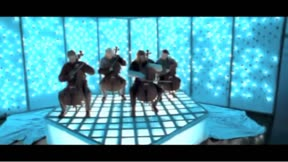
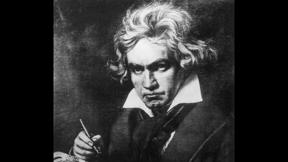
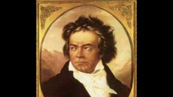
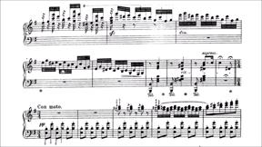
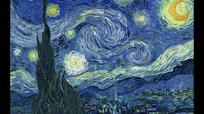
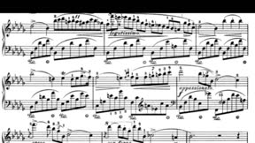
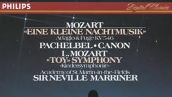
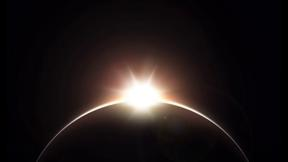
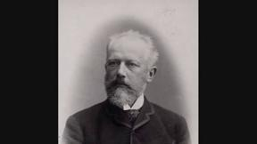

Albinoni, Tomaso - Adagio For Strings And Organ In G Minor |

Apocalyptica - Nothing Else Matters |
Bach, Johann Sebastian - Prelude & Fugue BWV 847 in c minor |
Bach, Johann Sebastian - Prelude in C Major |
Bach, Johann Sebastian - Air on G String |

Bach, Johann Sebastian - Cello Suite No. 1 in G Major, Prelude |
Bach, Johann Sebastian - Fantasia and fugue in G minor BWV 542 |
Bach, Johann Sebastian - Mass in B minor |
Bach, Johann Sebastian - Suite No. 2 in B minor, BWV 1067 - 6. Menuet - 7. Badinerie |
Bach, Johann Sebastian - Toccata and Fugue in D Minor |
Bach, Johann Sebastian - Toccata and Fugue, BWV 565 by Edson Lopes |
Beethoven, Ludwig Van - 5th Symphony in C Minor |

Beethoven, Ludwig Van - 9th Symphony, Finale |
Beethoven, Ludwig Van - Für Elise |
Beethoven, Ludwig Van - Moonlight Sonata |
Beethoven, Ludwig van - Ode an die Freude/Ode to Joy 1 |
Beethoven, Ludwig Van - Symphony No.6 Pastorale And Egmont Overture Op.68 |

Beethoven, Ludwig Van - Symphony No.7 in A major op.92 - II, Allegretto |

Berlioz, Hector - Dream of a Witches' Sabbath |
Bizet, Georges - Carmen Instrumental |
Bizet, Georges - Les Toreadors from Suite No. 1 |

Bizet, Georges - Moritz Moszkowski - Chanson boheme |
Bizet, Georges - Overture |
Borodin, Alexander - In the Steppes of Central Asia |
Borodin, Alexander - Polovetsian Dances from "Prince Igor" |
Brahms, Johannes - Hungarian Dance No. 5 - Allegro - Vivace |
Brandenburg Concerto No.3 in G major, BWV 1048 : I. Allegro moderato - Adagio |
Chopin, Frederic - Minute Waltz |
Chopin, Frederic - Piano Sonata No 2 in B flat minor, Funeral March |
Chopin, Frédéric - Etude No.12 in C minor,Op.10 |
Chopin, Frédéric - Fantaisie-Impromptu In C-Sharp Minor, Op. 66 |
Chopin, Frédéric - Nocturne op.9 No.1 |

Chopin, Frédéric - Nocturne op.9 No.2 |

Chopin, Frédéric - Nocturne op. 9 no. 1 in B flat minor |
Chopin, Frédéric - Polonaise No. 6 In A Flat major Op. 53. |
Clint Mansell - Requiem for a Dream |
Debussy, Claude - Clair De Lune |
Debussy, Claude - Nocturnes |
Debussy, Claude - Prelude to The Afternoon of a Faun |
Film Symphony Orchestra - Game of Thrones Theme |
Grieg, Edvard - In the Hall of the Mountain King (Instrumental) |
Grieg, Edvard - In the Hall of the Mountain King |
Grieg, Edvard - Morning Mood Suite No.1, Op.46 - 1. |
Grieg, Edvard - Peer Gynt, Op.23 - Incidental Music - No.9. Dance of the Mountain King's Daughter |
Grieg, Edvard - Prelude. In the Wedding Garden Op. 23: Act I, 1 |
Handel, George Frideric - The Messiah (Hallelujah Chorus) |
Handel, George Frideric - Water Music |
Haydn, Joseph - Symphony no. 94 "Surprise": 2nd movement |
Hildegard of Bingen - Alleluia, O virga mediatrix |
Howard Shore - The Ring Goes South |
Ippolitov-Ivanov, Mikhail - March of the Sardar |
Joel Rubin - klezmer ensemble |
John Williams - Hedwig's Theme |
John Williams - Star Wars Main Title |
John Williams - The Imperial March (Darth Vader's Theme) |
Jose Feliciano - Malaguena |
Klaus Badelt - He's a Pirate |
Korsakov, Rimsky - Dance of the Tumblers - Suite No. 4 |
Korsakov, Rimsky - Festival at Baghdad Op. 35: IV. Allegro molto |

Korsakov, Rimsky - Flight of the Bumblebee |
Korsakov, Rimsky - The Tale of the Kalendar Prince |
Ligeti, György - atmosphères / Rattle (Berliner Philharmoniker) |
Liszt, Franz - Hungarian Rhapsody No. 2 |
Mahler, Gustav - Symphony No. 1 ~ Funeral March |
Marcin - Bach's Toccata |
Mendelssohn - Wedding March |
Mozart - Lacrimosa |

Mozart, Wolfgang Amadeus - Eine kleine Nachtmusik - I. Allegro |
Mozart, Wolfgang Amadeus - Eine kleine Nachtmusik - II. Romance (Andante) |
Mozart, Wolfgang Amadeus - Piano Concerto No. 21 - Andante |
Mozart, Wolfgang Amadeus - Piano Sonata No 16 C major K 545 Barenboim |
Mozart, Wolfgang Amadeus - Requiem |
Mozart, Wolfgang Amadeus - Symphony #40 in G Minor, K 550 - 1. Molto Allegro |
Mozart, Wolfgang Amadeus - Symphony No. 25 in G minor KV 187 1st movement Allegro con brio |
Mozart, Wolfgang Amadeus - Symphony No. 25 In G Minor, K. 183, 1st Movement |

Mozart, Wolfgang Amadeus - Symphony No. 41 in C major "Jupiter" K. 551 |
Nino Rota - Main Title (The Godfather Waltz) |
O'Donnell, Martin - Halo Theme Song |
Orchestral Suite No. 2 in B Minor, BWV 1067: VII. Badinerie |
Pachelbel, Johann - Canon In D Major |
Paganini, Niccolò - Violin Concerto No.2 in B minor, La campanella Op.7-Rondo |
Peter and the Wolf, Op. 67: I. Introduction |
Peter and the Wolf, Op. 67: VI. The Wolf |
Pierluigi, Giovanni - Missa Papae Marcelli - Palestrina |
Prince of Persia Meets PARKOUR in REAL LIFE! |
Proch, Heinrich - Das Alpenhorn |
Prokofiev, Sergei - Dance of the Knights |
Prokofiev, Sergei - Peter and the Wolf |

Puccini, Giacomo - Un bel dì vedremo Act 2 |
Ravel, Maurice - Miroirs |
Saint-Saëns, Camille - Danse Macabre |
Saint-Saëns, Camille - Le Carnaval des Animaux, R. 125 - 7. Aquarium |
Satie, Erik - Gymnopédie No.1 |
Schoenberg, Arnold - Verklärte Nacht, Op.4 - Boulez. |
Schubert, Franz - Erlkönig |
Schumann, Robert - Traumerei - Violin and Orchestra |
Sheet Music Boss - RUSH E |
Skrillex - Orchestral Suite by Varien |
Smetana, Bedrich - Moldau |

Strauss, Richard - Also Sprach Zarathustra, Op. 30 |
Stravinsky, Igor - Firebird |
Stravinsky, Igor - The Rite of Spring |
Tchaikovsky, Pyotr Ilyich - 38 Act III No 23 Pas de quatre; Var 2; La Fée Argent |
Tchaikovsky, Pyotr Ilyich - 1812 Overture |
Tchaikovsky, Pyotr Ilyich - Coffee (Arabian Dance) |
Tchaikovsky, Pyotr Ilyich - Dance of Swans Suite,Opus 20a |
Tchaikovsky, Pyotr Ilyich - Dance of the Sugar Plum Fairy |
Tchaikovsky, Pyotr Ilyich - Maids of Honour |
Tchaikovsky, Pyotr Ilyich - No. 1. Marche (Entrance of King Florestan and Court) |

Tchaikovsky, Pyotr Ilyich - No. 24 Pas de caractère (Le Chat botté et la Chatte blanche) |

Tchaikovsky, Pyotr Ilyich - Nutcracker Suite Op. 71a - I. Miniature Overture |
Tchaikovsky, Pyotr Ilyich - Nutcracker Suite Op. 71a - VI. Dance of the Mirlitons |

Tchaikovsky, Pyotr Ilyich - Pas de quatre - Adagio |
Tchaikovsky, Pyotr Ilyich - Russian Dance Trepak |
Tchaikovsky, Pyotr Ilyich - Swan Lake (Swan Theme) |
Tchaikovsky, Pyotr Ilyich - Swan Lake Op. 20, Act I No. 2, Valse |
Tchaikovsky, Pyotr Ilyich - Swan Lake Suite, Op. 20a - II. Waltz |
Tchaikovsky, Pyotr Ilyich - The Wedding: No. 30b, Apotheosis Op. 66, Act III |
Tchaikovsky, Pyotr Ilyich - Valse Op. 66a, TH 234 |
Tchaikovsky, Pyotr Ilyich - Waltz of The Flowers Op.71 |
Verdi, Giuseppe - Requiem: II. Dies irae |
Vivaldi, Antonio - Four Seasons |
Wagner, Richard - Preludio y Marcha nupcial WWV 75, Act III |

Wagner, Richard - Die Walküre - Prelude 1º Act. Scala, Barenboim. 2010 |

Wagner, Richard - Tannhäuser Overture |
Wagner, Richard - The Flying Dutchman Overture |
Yann Tiersen - Comptine d'Un Autre Été (Amelie) |
Yiruma, (이루마) - River Flows in You |
Bach, Johann Sebastian - C# major BWV 848 |

Bach, Johann Sebastian - C# minor BWV 849 |
Bach, Johann Sebastian - D major BWV 850 |
Bach, Johann Sebastian - D minor BWV 851 |
Bach, Johann Sebastian - Eb major BWV 852 |
Bach, Johann Sebastian - Eb minor BWV 853 |